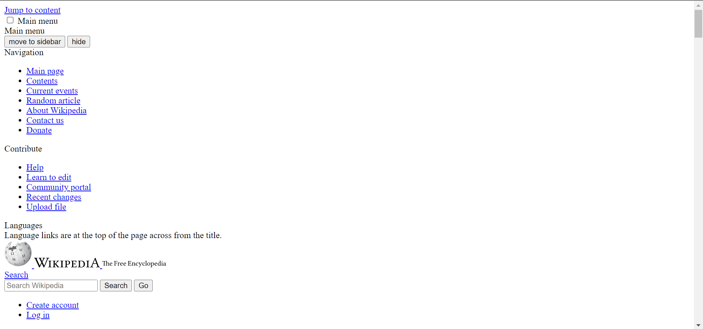
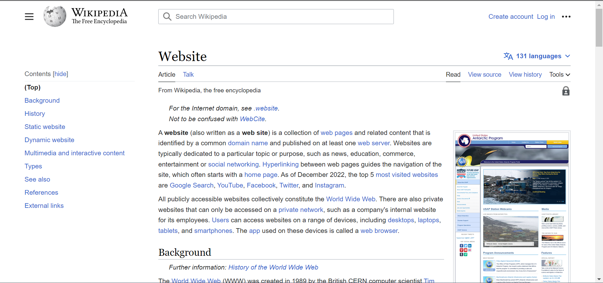
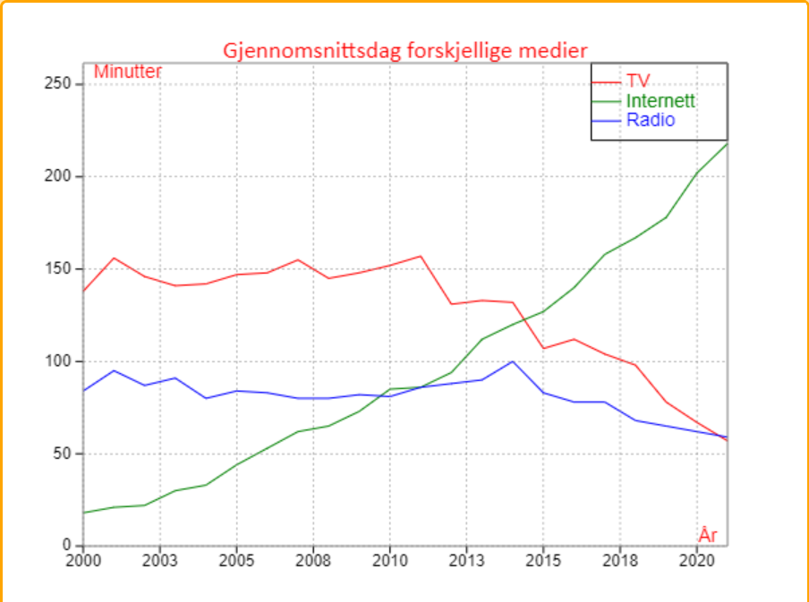

HTML blir brukt til å strukturere nettsider, men ikke mer enn det. For at nettsiden skal se fin ut må vi bruke CSS. Her er et eksempel på en nettside som bare består av HTML:
CSS bruker vi når vi vil gjøre nettsiden fin, responsiv og dynamisk. CSS er svært viktig for at brukeren skal ha en god opplevelse når hen navigerer en nettside. Her ser vi den samme nettsiden som vist over, med CSS denne gangen:
Vi ser at nettsiden blir mye lettere å trekke ut informasjon fra, i tillegg til at den er fin å se på.
Når vi lager en nettside bruker vi javascript til masse forskjellig. Blant annet for å gjøre den interaktiv, mer dynamisk, presentere data og mye mer. Her bruker læreren Rolf-Magne javascript for å presentere data ved bruk av en graf:
